1. Проводники, изоляторы и полупроводники
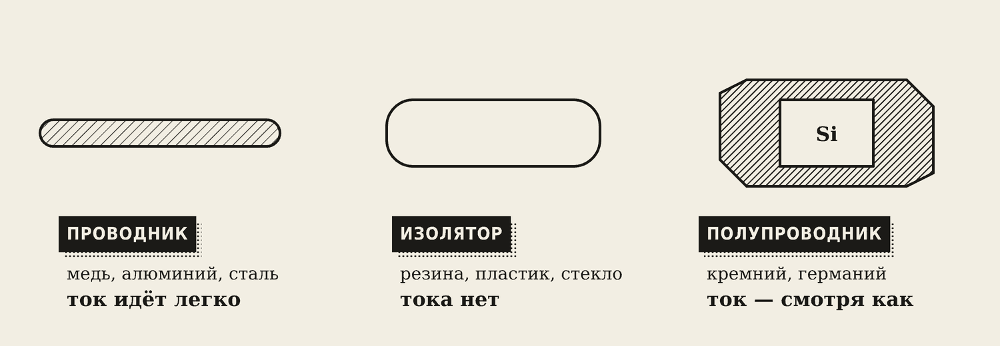
- Проводники (медь, алюминий, сталь) пропускают ток легко.
- Изоляторы (резина, пластик, стекло) тока не пропускают.
- Полупроводники (кремний, германий) — посередине. И главное — их проводимостью можно управлять: нагревом, светом, добавками.
При нагреве и освещении полупроводник проводит лучше. На этом работают датчики температуры и света.
2. Кристалл кремния
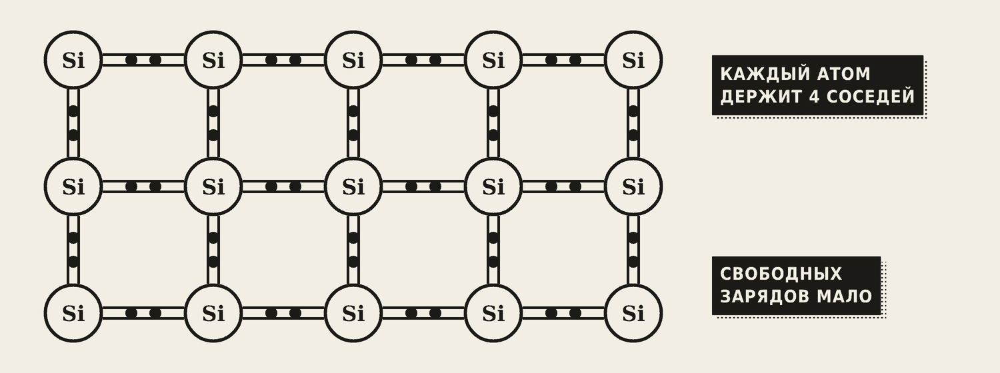
В чистом кристалле каждый атом кремния крепко держит четырёх соседей — свободных зарядов почти нет. Это собственная проводимость, она маленькая.
Примесная проводимость появляется, если добавить чуть-чуть другого вещества:
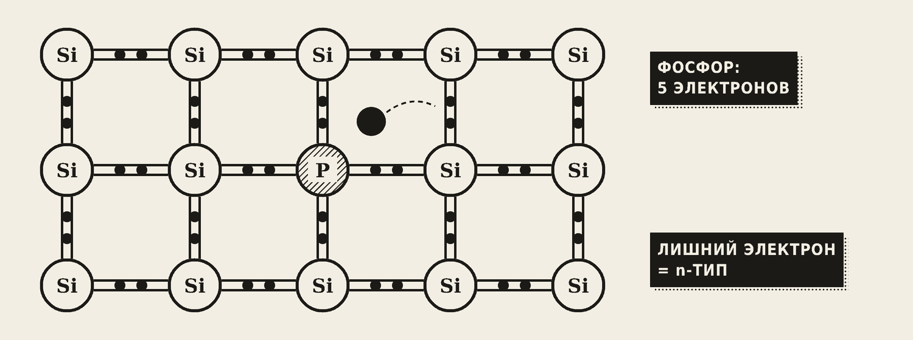
- n-тип: добавили фосфор. У него на один электрон больше, чем нужно для связей, — лишний электрон свободно бегает. Носители — электроны («минус»).
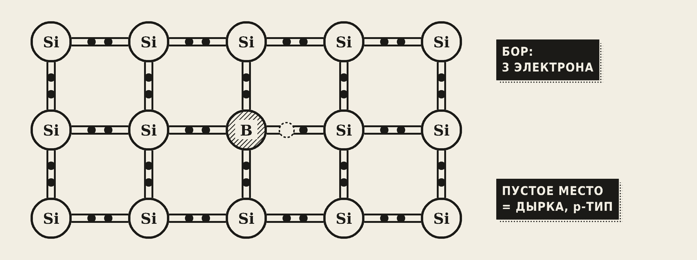
- p-тип: добавили бор. Ему не хватает одного электрона — в решётке остаётся пустое место, дырка. Соседний электрон прыгает в неё, дырка перемещается — как пузырёк в воде. Носители — дырки («плюс»).
3. p-n-переход
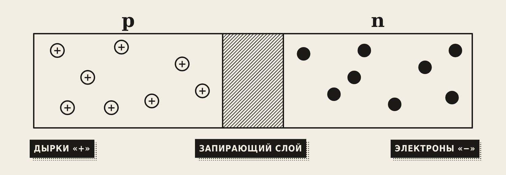
Соединим p- и n-области в одном кристалле. На границе электроны и дырки встречаются и «гасят» друг друга — получается тонкий запирающий слой без свободных зарядов.
- Подключим плюс к p, минус к n (прямое включение) — запирающий слой сужается, ток идёт.
- Наоборот (обратное включение) — слой расширяется, тока почти нет.
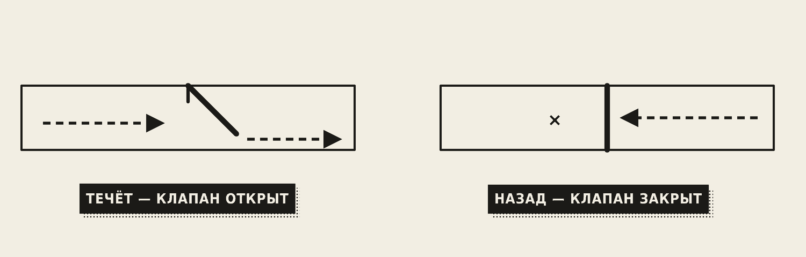
Запомните
p-n-переход пропускает ток только в одну сторону — как ниппель велосипедной камеры пропускает воздух только внутрь.
На p-n-переходах работают диоды, транзисторы, светодиоды и солнечные панели.
4. Диод
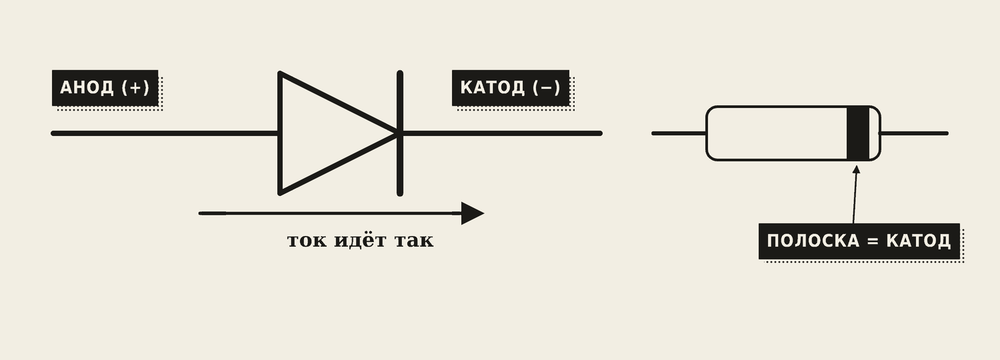
Диод — p-n-переход в корпусе. Выводы: анод (+, сторона p) и катод (−, сторона n). На схеме — треугольник-стрелка с чертой: стрелка показывает, куда идёт ток. На корпусе катод отмечают полоской.
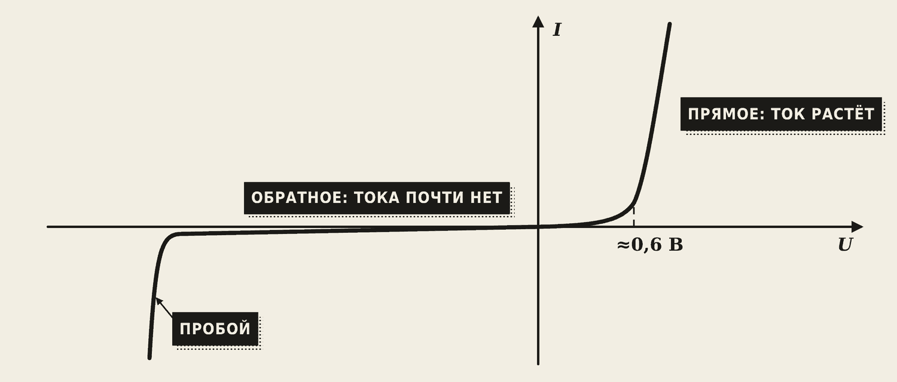
Вольт-амперная характеристика (ВАХ) — график тока от напряжения:
- в прямом направлении ток резко растёт после ≈ 0,6 В (кремний);
- в обратном — тока почти нет, пока не наступит пробой.
Главные параметры: наибольший прямой ток и наибольшее обратное напряжение. Превысили — диод сгорит.
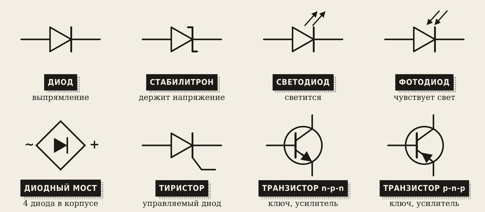
Родственники диода:
- Стабилитрон держит постоянное напряжение — работает в режиме обратного пробоя, но не сгорает.
- Светодиод светится: фонарик, индикатор «Сеть» на сварочном аппарате.
- Фотодиод реагирует на свет: приёмник пульта телевизора, датчик света.
5. Как проверить диод мультиметром
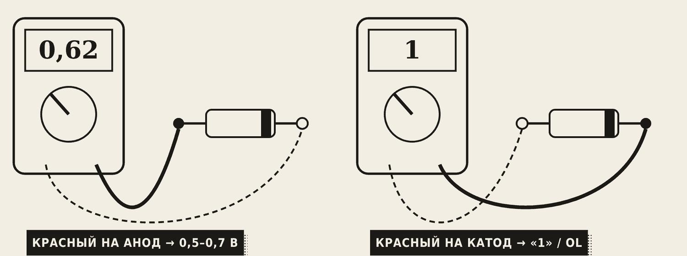
Режим мультиметра «диод» (значок диода):
- Красный щуп на анод, чёрный на катод — исправный диод показывает 0,5–0,7 (это 500–700 мВ).
- Наоборот — «1» или OL: тока нет.
| Показание в обе стороны | Диагноз |
|---|---|
| 0,6 и «1» | исправен |
| 0 и 0 (пищит) | пробит — короткое замыкание |
| «1» и «1» | обрыв |
6. Выпрямители
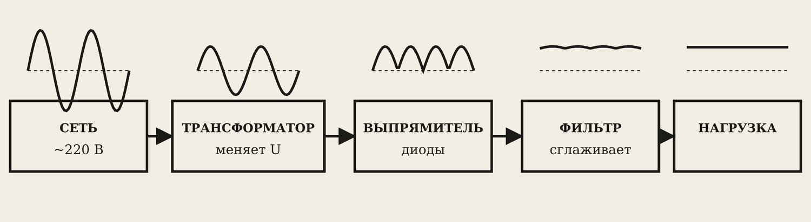
Выпрямитель превращает переменный ток в постоянный. Пример — зарядка телефона: трансформатор понижает напряжение, диоды выпрямляют, фильтр сглаживает.
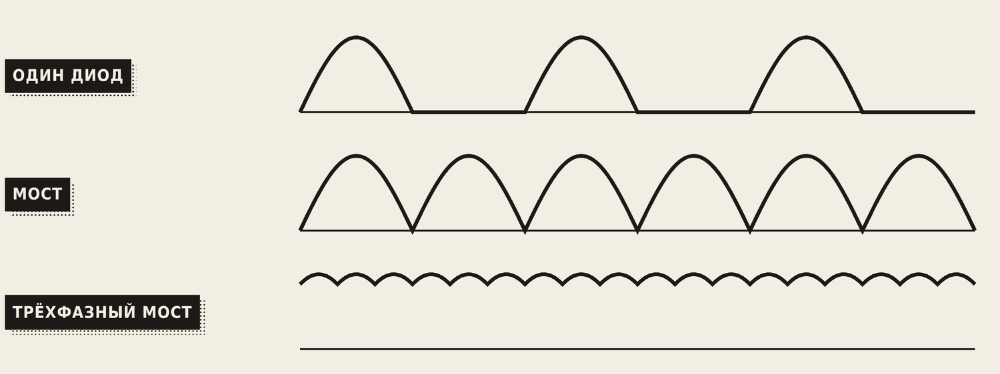
- Однополупериодный — один диод. Пропускает только половину волны, вторая половина теряется. Ток сильно пульсирует.
- Мостовой (диодный мост) — 4 диода. Обе половины волны направляются в одну сторону. Пульсаций меньше, используется вся волна.
- Трёхфазный мост — 6 диодов, питается от трёх фаз. Пульсации совсем маленькие.
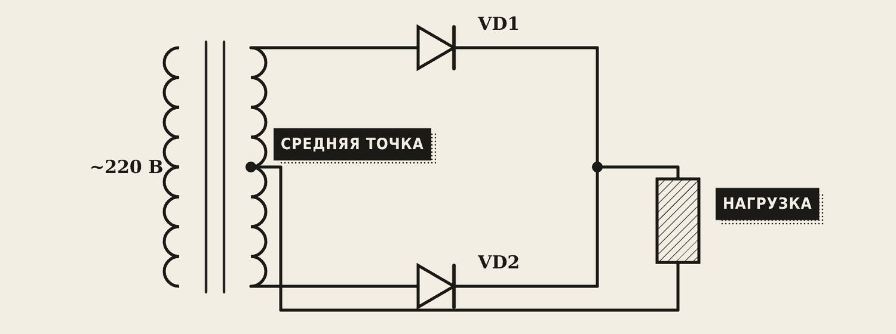
Есть и схема со средней точкой: трансформатор с отводом посередине и два диода. Она тоже выпрямляет обе половины волны.
Фильтр (конденсатор и/или дроссель) сглаживает пульсации: конденсатор заряжается на пиках и отдаёт заряд в провалах. Стабилизатор держит напряжение постоянным, даже если сеть «гуляет».
7. Сварочный выпрямитель
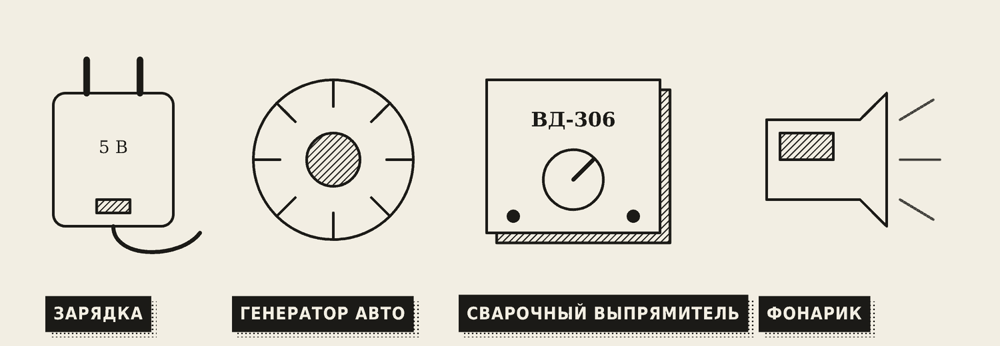
Сварочный выпрямитель = трансформатор + мощный диодный мост (чаще трёхфазный) + дроссель. Даёт постоянный ток: дуга горит стабильнее, брызг меньше, чем на переменном, легче варить тонкий металл и легированные стали.
Выпрямитель стоит и в генераторе автомобиля: внутри синхронный генератор переменного тока и диодный мост, на выходе — постоянные 14 В для аккумулятора.
Словарик
- Полупроводник — материал, проводимостью которого можно управлять (кремний, германий).
- n-тип — полупроводник с лишними электронами.
- p-тип — полупроводник с «дырками».
- Дырка — пустое место для электрона; ведёт себя как положительный заряд.
- p-n-переход — граница между p- и n-областями; пропускает ток в одну сторону.
- Анод / катод — плюсовой и минусовой выводы диода.
- ВАХ — вольт-амперная характеристика, график тока от напряжения.
- Стабилитрон — диод, который держит постоянное напряжение.
- Выпрямитель — устройство, превращающее переменный ток в постоянный.
- Диодный мост — 4 диода, выпрямляют обе половины волны.
- Фильтр — конденсатор и/или дроссель, сглаживает пульсации.
Эталоны в тетрадь
Перепишите в тетрадь по билетам — каждый эталон на отдельную страницу, с рисунком и строкой «Мой пример».
Полупроводники и p-n-переход
Полупроводники: собственная и примесная проводимость, p-n-переход и его свойства.
- Полупроводники (кремний, германий) проводят ток хуже металлов, но лучше диэлектриков. При нагреве и освещении проводят лучше.
- Собственная проводимость — у чистого кристалла, она маленькая.
- Примесная проводимость — когда добавили примесь: n-тип (лишние электроны, «минус») или p-тип («дырки», «плюс»).
- p-n-переход — граница между p- и n-областями. Пропускает ток только в одну сторону — как ниппель в велосипедной камере пропускает воздух только внутрь.
- На p-n-переходе работают диоды, транзисторы, светодиоды и солнечные панели.
Диод
Полупроводниковый диод: устройство, ВАХ, параметры, обозначение. Стабилитрон, светодиод, фотодиод.
- Диод — p-n-переход в корпусе, пропускает ток в одну сторону. Выводы: анод (+) и катод (–). Обозначение — треугольник-стрелка с чертой. (Нарисуйте.)
- ВАХ: в прямом направлении ток резко растёт после ≈ 0,6 В (кремний); в обратном — тока почти нет, пока не наступит пробой. (Нарисуйте график.)
- Параметры: наибольший прямой ток и наибольшее обратное напряжение.
- Стабилитрон держит постоянное напряжение. Светодиод светится (фонарик, индикатор на сварочном аппарате). Фотодиод реагирует на свет (приёмник пульта телевизора, датчик света).
- Проверка мультиметром: в прямом направлении показывает ≈ 0,5–0,7 В, в обратном — «1» (обрыв).
Выпрямители
Выпрямители: однополупериодная и мостовая схемы, сглаживающий фильтр, стабилизатор. Сварочный выпрямитель.
- Выпрямитель превращает переменный ток в постоянный. Пример: зарядка телефона.
- Однополупериодный — один диод, пропускает только половину волны, ток сильно пульсирует. (Схема и график.)
- Мостовой (диодный мост) — 4 диода, используются обе половины волны, пульсаций меньше. (Схема и график.)
- Фильтр (конденсатор и/или дроссель) сглаживает пульсации. Стабилизатор держит напряжение постоянным, даже если сеть «гуляет».
- Сварочный выпрямитель: трансформатор + мощный диодный мост (часто трёхфазный) + дроссель. Даёт постоянный ток: дуга стабильнее, брызг меньше, чем на переменном.
Проверь себя
Сначала ответьте сами — в тетради или вслух. Потом нажмите на вопрос, чтобы увидеть ответ.
1Чем p-тип отличается от n-типа?
В n-типе носители — лишние электроны (добавлен фосфор), в p-типе — дырки (добавлен бор).
2Почему p-n-переход сравнивают с ниппелем?
Он пропускает ток только в одну сторону.
3Как по корпусу диода найти катод?
По полоске на корпусе.
4Мультиметр показывает 0,62 в одну сторону и «1» в другую. Что с диодом?
Исправен.
5Диод «пищит» в обе стороны. Что с ним?
Пробит — короткое замыкание.
6Сколько диодов в мостовом выпрямителе и чем он лучше однополупериодного?
Четыре. Использует обе половины волны, пульсаций меньше.
7Зачем после выпрямителя ставят конденсатор?
Чтобы сгладить пульсации: он заряжается на пиках и отдаёт заряд в провалах.
8Из чего состоит сварочный выпрямитель и чем он лучше трансформатора?
Трансформатор, диодный мост и дроссель. Постоянный ток — дуга стабильнее, брызг меньше.
Попробуйте в лаборатории
Откройте на телефоне или компьютере — ничего устанавливать не нужно.
Ответы к «Проверь себя»
- В n-типе носители — лишние электроны (добавлен фосфор), в p-типе — дырки (добавлен бор).
- Он пропускает ток только в одну сторону.
- По полоске на корпусе.
- Исправен.
- Пробит — короткое замыкание.
- Четыре. Использует обе половины волны, пульсаций меньше.
- Чтобы сгладить пульсации: он заряжается на пиках и отдаёт заряд в провалах.
- Трансформатор, диодный мост и дроссель. Постоянный ток — дуга стабильнее, брызг меньше.